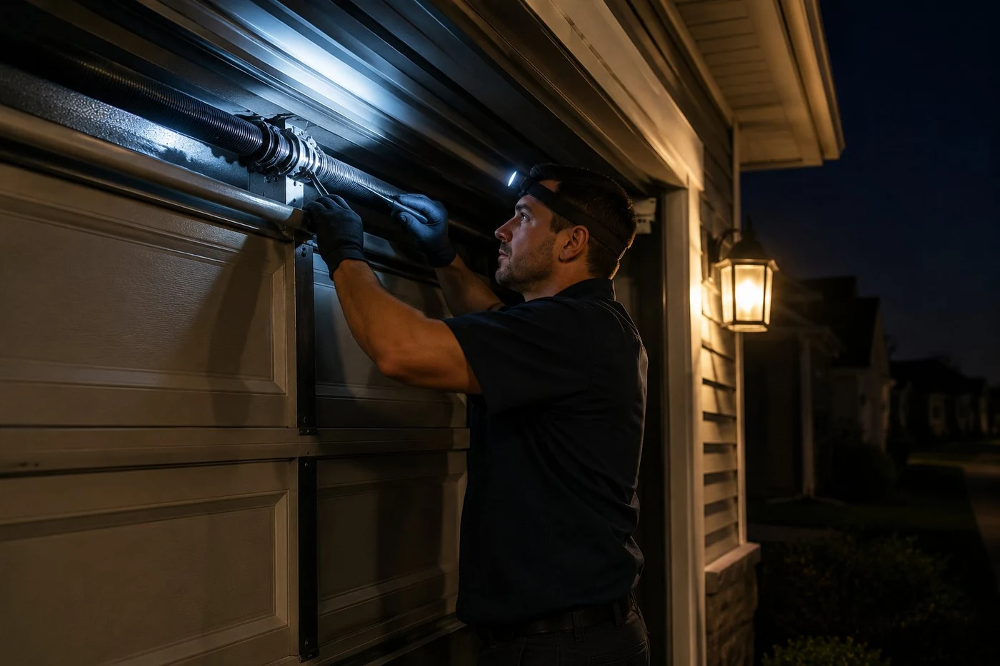

24-hour garage door repair — no after-hours surcharge
A garage door that fails at 10pm Tuesday is just as urgent as one that fails at 10am Thursday. We answer emergency calls nights and weekends across Columbus and Franklin County, and we charge the same price regardless of when you call. No emergency premium, no after-hours surcharge — just the cost of the repair.
For most Columbus addresses we can reach you within one to two hours on an after-hours call. We will give you an honest arrival window — not a false promise.

Most common 24-hour calls in Columbus
Door stuck open overnight
The most time-sensitive situation we handle. An open garage is an open invitation. Most common causes — spring failure, snapped cable, door off track — are all same-visit repairs. Emergency repair details
Spring broken, cannot get car out
A broken torsion spring leaves the door pinned closed. If you need your vehicle for a 6am shift and the spring went at midnight, call us. Spring replacement typically takes under an hour. Spring repair details
Door came off track
Rollers off the track leaves the door stuck. Do not run the opener — you will bend the track. Off-track repair details
Opener failure, door will not respond
Most opener failures are diagnosable and repairable same-visit. Opener repair details
"The call that sticks with me most was from a nurse in Dublin. She had come off a 12-hour night shift at about 7am and her spring had broken during the night. Car was stuck in the garage, she had to be back at the hospital in 8 hours, and she was exhausted. We were there in 45 minutes. Spring replaced in under an hour, car out of the garage, she got her sleep. That is the call that matters."
24-hour service questions
Really no extra charge for overnight calls?
Correct. No after-hours premium. The repair cost is the repair cost — we do not add a surcharge for calls that happen at inconvenient hours.
What areas do you cover for 24-hour service?
Columbus and all Franklin County suburbs — Dublin, Westerville, Hilliard, Grove City, Gahanna, Upper Arlington, Reynoldsburg, and Lewis Center. If you are in the greater Columbus area, call us.
How long will you take to arrive?
For most Columbus addresses, one to two hours on an emergency call. We will give you an honest window when you call.
Can you fix it in one visit?
For the most common emergency calls — springs, cables, off-track, opener failures — yes. We carry parts for the most common Columbus residential doors.